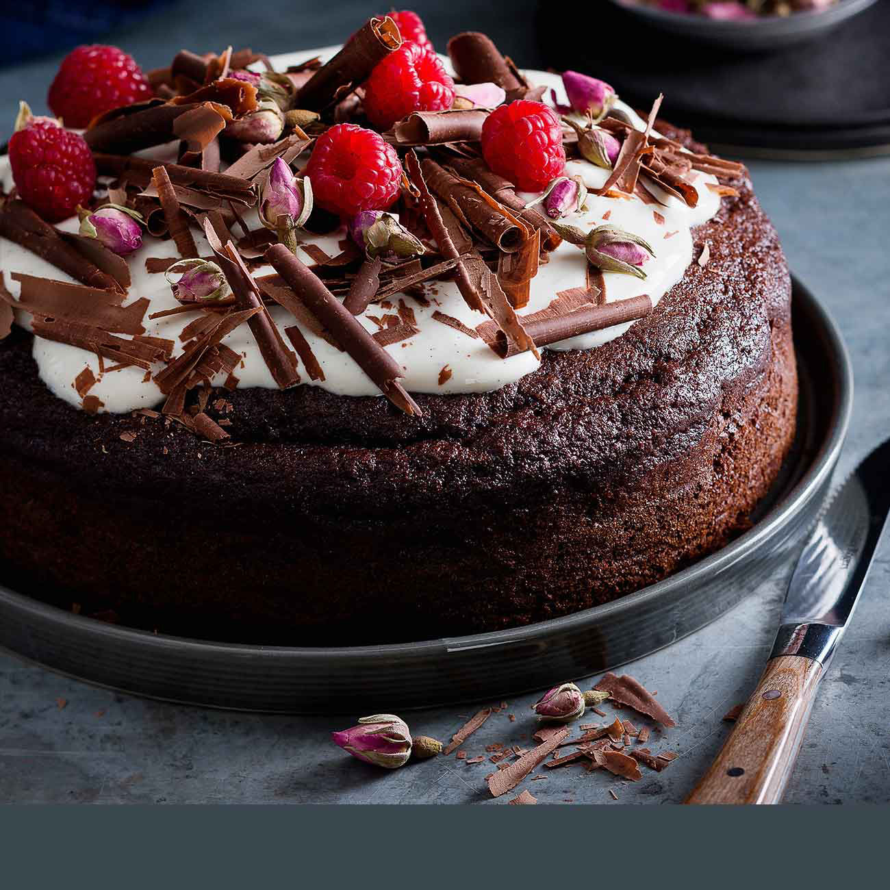

Choclate Cake
One of my mum's best

Ingredients
- ½ cup butter, room temperature
- ½ cup white sugar
- 1 egg, room temperature
- 1 ⅓ cups all-purpose flour
- 1 teaspoon unsweetened cocoa
- 1 teaspoon baking powder
- ½ (14 ounce) can sweetened condensed milk
- 1 tablespoon golden syrup
- ¼ cup white sugar
- 1 tablespoon all-purpose flour
- ¼ cup butter
- 1 (16 ounce) container chocolate frosting
Steps
- Preheat oven to 350 degrees F (175 degrees C). Line a rimmed baking sheet or jellyroll pan with foil.
- Beat 1/2 cup butter and sugar with an electric mixer in until light and fluffy. The mixture should be
noticeably lighter in color. Add the room-temperature egg and beat well. Sift together the flour, cocoa powder,
and baking powder. Gradually stir into butter mixture until fully combined. Spread batter into prepared pan.
- Bake in preheated oven until top springs back when touched lightly with a finger, 15 to 20 minutes. Let cool in
pan on a wire rack.
- In a small saucepan over medium heat, combine condensed milk, golden syrup, and 1/4 cup butter. Whisk 1/4 cup
sugar with 1 tablespoon flour; stir into milk mixture. Cook and stir until butter is melted and sugar is
completely dissolved. Remove from heat and allow to cool slightly. Spread over cooled cake. Allow to cool
completely and set.
- Frost when set with chocolate frosting. Cut into bars and serve.